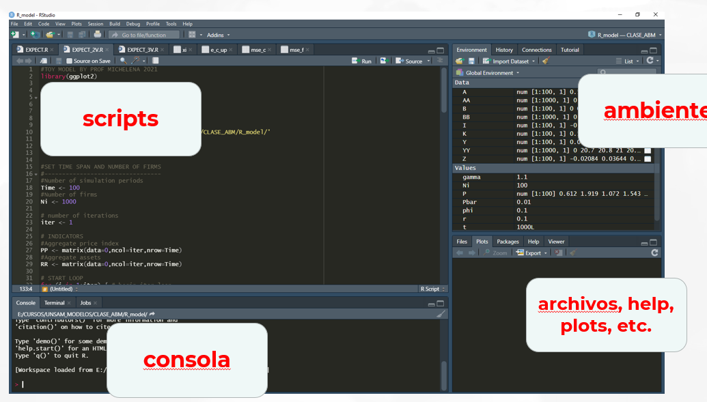
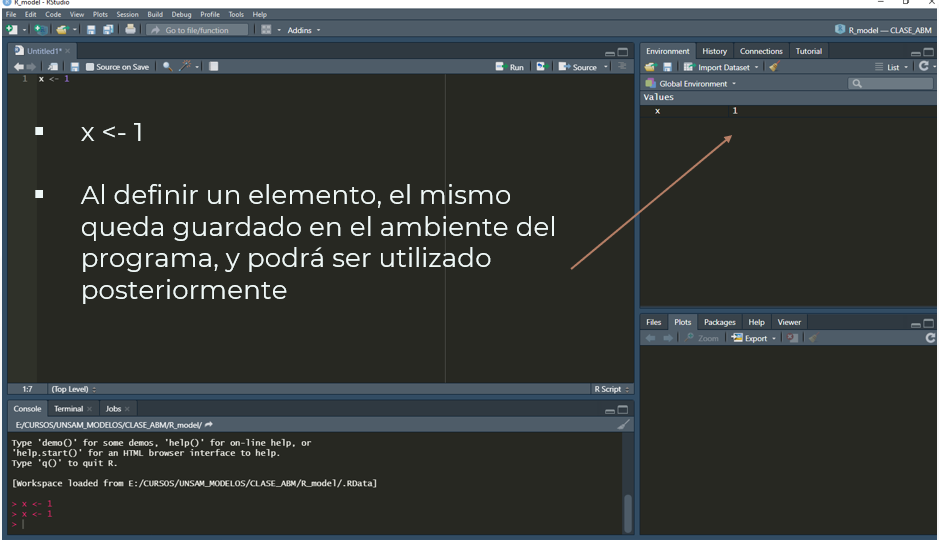

nombre_objeto <- "definición_del_objeto"CLASE 1
Introducción
¿Qué es R?
R es un lenguaje de programación diseñado específicamente para el procesamiento, modelado y análisis estadístico de datos. Su principal fortaleza radica en su flexibilidad y en la gran variedad de herramientas estadísticas y gráficas que ofrece.
Una de sus características distintivas es que se trata de software libre (https://www.r-project.org/), lo que significa que cualquier persona puede utilizarlo, modificarlo y distribuirlo sin costo. Su estructura se basa en una sintaxis básica conocida como R base, que permite realizar operaciones estadísticas simples y complejas con facilidad.
Además, R se caracteriza por tener una sintaxis incremental, ya que su funcionalidad se puede ampliar mediante paquetes desarrollados por terceros. Esta extensibilidad ha permitido que se consolide como una de las principales plataformas de análisis en múltiples disciplinas.
R también es reconocido por su capacidad para generar gráficos con calidad de publicación, lo que lo convierte en una herramienta ideal para informes técnicos, papers académicos y presentaciones profesionales.
Finalmente, R cuenta con una amplia comunidad de usuarios y desarrolladores en todo el mundo. Esta comunidad activa contribuye continuamente al desarrollo de nuevos paquetes, documentación, foros de ayuda y recursos educativos que fortalecen y enriquecen el ecosistema del lenguaje.
R VS STATA
R presenta una serie de ventajas importantes frente a Stata, especialmente para quienes buscan una herramienta potente, flexible y accesible para el análisis de datos:
Es gratuito: R es completamente libre y de código abierto. A diferencia de Stata, no requiere licencias de pago, lo que lo hace ideal tanto para instituciones públicas como para estudiantes y profesionales independientes.
Alta potencia computacional: R permite realizar análisis estadísticos complejos, modelado avanzado y procesamiento masivo de datos, gracias a su arquitectura extensible y a la amplia variedad de paquetes disponibles.
Velocidad: Con el uso adecuado de paquetes optimizados (como
data.tableodplyr), R puede ser muy eficiente en el manejo de grandes volúmenes de datos.Compatibilidad con otros lenguajes: R se integra fácilmente con otros lenguajes como Python, C++, SQL y Julia, lo que permite construir flujos de trabajo más completos y personalizados.
Manejo de microdatos en memoria virtual: A diferencia de Stata, R permite trabajar con múltiples conjuntos de microdatos de forma simultánea sin necesidad de cargarlos físicamente al entorno, lo cual mejora la eficiencia y facilita comparaciones entre bases.
Aplicaciones avanzadas: R incluye herramientas para aprendizaje automático (machine learning), redes neuronales profundas (deep neural networks) y otras técnicas de inteligencia artificial, que amplían significativamente sus posibilidades de aplicación en áreas emergentes.
RStudio: el entorno de trabajo para programar en R
RStudio es un entorno de desarrollo integrado (IDE) diseñado específicamente para utilizar el lenguaje R de manera más amigable y eficiente. Aunque R puede ejecutarse desde una consola básica, RStudio ofrece una interfaz visual intuitiva que facilita enormemente la escritura de código, la organización de proyectos y la visualización de resultados.
Este entorno permite correr comandos, gestionar scripts, visualizar gráficos, explorar datasets y utilizar extensiones del lenguaje R, todo desde una misma plataforma. Incluye herramientas como autocompletado, resaltado de sintaxis, paneles para archivos y gráficos, y soporte para R Markdown, entre muchas otras funcionalidades.
Además, RStudio es gratuito (https://www.posit.co/download/rstudio-desktop/) y de código abierto, y puede descargarse fácilmente desde su sitio web oficial.
Gracias a su facilidad de uso y potencia, RStudio se ha convertido en el entorno más utilizado por estudiantes, investigadores y profesionales que trabajan con análisis de datos en R.

Syntaxis
Primeros pasos en RStudio: crear un archivo y cargar librerías
Cuando abrimos RStudio por primera vez, el primer paso para comenzar a trabajar es crear un nuevo archivo de script en R, donde escribiremos nuestras líneas de código.
Para hacerlo:
Hacé clic en File > New File > R Script, o bien usá el atajo Ctrl + Shift + N (Windows) / Cmd + Shift + N (Mac).
Se abrirá una pestaña nueva donde podés comenzar a escribir comandos, guardarlos y ejecutarlos en cualquier momento.
En R, muchas funcionalidades avanzadas no están incluidas en la versión base, pero pueden añadirse a través de librerías (también llamadas paquetes). Estas librerías amplían las capacidades del lenguaje, permitiendo por ejemplo hacer gráficos avanzados, manipular datos, o aplicar técnicas de machine learning.
Para utilizar una librería en R, hay dos pasos:
Instalarla (una sola vez):
options(repos = c(CRAN = “https://cloud.r-project.org”))))
install.packages(“dplyr”)
Cargarla (cada vez que abrís R):
Definición de objetos en R
En R, los objetos son la unidad fundamental de trabajo. Todo lo que manipulamos, analizamos o visualizamos en R se representa como un objeto. Estos pueden adoptar distintas formas: desde un número individual, un vector numérico o de caracteres, hasta una función, una base de datos o incluso un gráfico.
A medida que se crean, los objetos se almacenan en la memoria de trabajo, y pueden visualizarse en el panel superior derecho de RStudio, donde se muestra el entorno activo.
Para definir un objeto en R, se utiliza el operador de asignación <-. Este operador permite asignar un valor o conjunto de valores a un nombre. La sintaxis es:
Por ejemplo:
x <- 5
mi_vector <- c(1, 2, 3)En estos ejemplos, el objeto x contiene el número 5, mientras que mi_vector es un vector numérico con tres elementos.

Vectores en R
La mayoría de las operaciones aritméticas (+, -, *, /) y funciones en R están definidas con carácter vectorial.
¿Y qué significa esto? Que R opera componente a componente cuando trabaja con vectores.
¿Cómo se define un vector?
En R, los vectores se crean con la función c() (que viene de concatenate, concatenar). Es la estructura más simple y común del lenguaje.
# Un vector de números
edades <- c(23, 35, 42, 19)
# Un vector de texto
nombres <- c("Ana", "Luis", "Pedro")
# Un vector lógico
respuestas <- c(TRUE, FALSE, TRUE)a <- c(1, 2, 3)
b <- c(10, 20, 30)
a + b # Suma componente a componente[1] 11 22 33A continuación se muestran ejemplos básicos de cómo crear objetos y vectores en R.
# Primer comando: creo un objeto numérico
x <- 1
x # Resultado: 1[1] 1# Reasigno el objeto con un valor tipo texto (character)
x <- "hola"
x # Resultado: "hola"[1] "hola"# Creo un vector numérico con varios valores
x <- c(10.4, 5.6, 3.1, 6.4, 21.7)
x # Resultado: 10.4 5.6 3.1 6.4 21.7[1] 10.4 5.6 3.1 6.4 21.7# Creo un vector de texto (caracteres)
x <- c("a", "b", "c")
x # Resultado: "a" "b" "c"[1] "a" "b" "c"Tipos o clases de datos en R
Los principales tipos de datos atómicos que podés encontrar en R son:
character→ Texto (por ejemplo:"hola")numeric→ Números decimales (por ejemplo:3.14)integer→ Números enteros (por ejemplo:4L)complex→ Números complejos (por ejemplo:2 + 3i)logical→ Verdadero o falso (TRUE/FALSE)
Cuando combinamos tipos distintos, R realiza coerción automática para unificarlos bajo un mismo tipo. Por ejemplo, si concatenás un número y un texto, todo se transforma en texto:
mi_vector <- c(1, "a", TRUE)
class(mi_vector) # character[1] "character"Operadores aritméticos básicos
En R, los operadores aritméticos elementales son los habituales que usamos en matemáticas:
| Operador | Significado | Ejemplo |
|---|---|---|
+ |
Suma | 2 + 3 |
- |
Resta | 5 - 1 |
* |
Multiplicación | 4 * 2 |
/ |
División | 10 / 2 |
^ |
Potencia | 2 ^ 3 |
# Ejemplos básicos
2 + 3 # Suma [1] 55 - 1 # Resta [1] 44 * 2 # Multiplicación [1] 810 / 2 # División [1] 52^3 # Potencia[1] 8Funciones matemáticas comunes
R también incluye muchas funciones matemáticas conocidas:
| Función | Significado |
|---|---|
log(x) |
Logaritmo natural |
exp(x) |
Exponencial de x |
sqrt(x) |
Raíz cuadrada |
sin(x) |
Seno |
cos(x) |
Coseno |
tan(x) |
Tangente |
Otras funciones útiles sobre vectores
R también permite aplicar funciones estadísticas y agregadas sobre vectores numéricos:
| Función | Descripción |
|---|---|
max(x) |
Valor máximo |
min(x) |
Valor mínimo |
range(x) |
Rango (mínimo y máximo) |
length(x) |
Cantidad de elementos del vector |
sum(x) |
Suma total |
mean(x) |
Promedio |
prod(x) |
Producto acumulado |
Operadores lógicos básicos
En R, los operadores lógicos se utilizan para comparar valores. Devuelven resultados de tipo TRUE o FALSE, que pueden utilizarse para filtrar datos, construir condiciones o ejecutar decisiones.
| Operador | Significado | Ejemplo |
|---|---|---|
> |
Mayor que | 5 > 3 |
>= |
Mayor o igual que | 5 >= 5 |
< |
Menor que | 2 < 4 |
<= |
Menor o igual que | 3 <= 3 |
== |
Igual (estricto) | 4 == 4 |
!= |
Distinto de | 5 != 3 |
= |
No se recomienda para comparación, solo para asignación dentro de funciones |
⚠️ Importante: Para verificar si dos valores son iguales, se usa
==.
El signo=puede funcionar como asignación, pero no se recomienda para comparaciones lógicas.
Ejemplos prácticos
# Comparaciones básicas
5 > 3 # TRUE[1] TRUE4 == 4 # TRUE[1] TRUE2 < 1 # FALSE[1] FALSE5 != 5 # FALSE[1] FALSE# Comparar vectores
x <- c(1, 2, 3)
x > 1 # Resultado: FALSE, TRUE, TRUE[1] FALSE TRUE TRUEDefinición de objetos en R
R es un lenguaje orientado a objetos. Casi todo lo que hacemos —desde guardar un número hasta construir modelos complejos— se basa en crear y manipular objetos.
A continuación se presentan los principales tipos de objetos en R, todos incluidos en este mismo documento:
Vectores
Los vectores son la unidad más básica de datos en R.
Contienen elementos del mismo tipo (numéricos, caracteres, lógicos, etc.).
v_num <- c(10, 20, 30) # Vector numérico
v_txt <- c("a", "b", "c") # Vector de texto
v_log <- c(TRUE, FALSE, TRUE) # Vector lógicoArrays
Extienden las matrices a más de dos dimensiones.
a <- array(1:8, dim = c(2, 2, 2)) # Array 3DListas
Colecciones de elementos de distinto tipo o estructura.
# Crear una lista
y <- list(
calificacion = c("a", "b", "c"),
nota = c(10, 8, 7)
)Acceso mediante el nombre del elemento
y$calificacion # Devuelve: "a" "b" "c"[1] "a" "b" "c"y$nota # Devuelve: 10 8 7[1] 10 8 7Acceso por posición con doble corchete [[ ]]
y[[1]] # Primer elemento: "a" "b" "c"[1] "a" "b" "c"y[[2]] # Segundo elemento: 10 8 7[1] 10 8 7Acceso por posición con un solo corchete [ ] devuelve una lista (no el contenido)
y[2] # Devuelve una sublista con un solo elemento$nota
[1] 10 8 7Acceso a elementos individuales dentro de componentes
y[[1]][1] # Primer valor de calificación: "a"[1] "a"y$nota[1] # Primer valor numérico: 10[1] 10Factores
Representan variables categóricas con niveles predefinidos
niveles <- factor(c("bajo", "medio", "alto", "medio"))Data Frames
Tablas con columnas que pueden tener diferentes tipos de datos.
df <- data.frame(
nombre = c("Ana", "Luis"),
edad = c(25, 30),
aprobado = c(TRUE, FALSE)
)Funciones
Objetos que encapsulan una operación. Se pueden definir funciones propias.
suma <- function(x, y) {
return(x + y)
}
resultado <- suma(3, 5) # Resultado esperado: 8Matrices en R
Las matrices son estructuras bidimensionales que almacenan datos del mismo tipo (numéricos, lógicos, etc.). Son fundamentales para operaciones algebraicas y manipulación de datos estructurados.
# Crear una matriz 2x2
x <- matrix(c(2, 7, 3, 8), nrow = 2, ncol = 2)
x [,1] [,2]
[1,] 2 3
[2,] 7 8# Acceder a la segunda columna
x[, 2][1] 3 8# Acceder a un elemento específico (fila 1, columna 1)
x[1, 1][1] 2# Acceder a la primera fila
x[1, ][1] 2 3# Asignar nombres a las columnas
colnames(x) <- c("col1", "col2")
x col1 col2
[1,] 2 3
[2,] 7 8# Asignar nombres a las filas
rownames(x) <- c("row1", "row2")
x col1 col2
row1 2 3
row2 7 8# Obtener nombres de filas
rownames(x)[1] "row1" "row2"# Obtener nombres de columnas
colnames(x)[1] "col1" "col2"# Dimensiones de la matriz (filas, columnas)
dim(x)[1] 2 2# Multiplicación elemento a elemento
x * x col1 col2
row1 4 9
row2 49 64# Producto matricial (por su transpuesta)
x %*% t(x) row1 row2
row1 13 38
row2 38 113# Añadir una columna con cbind()
x <- cbind(x, c(7, 3))
x col1 col2
row1 2 3 7
row2 7 8 3# Añadir una fila con rbind()
x <- rbind(x, c(3, 7, 9))
x col1 col2
row1 2 3 7
row2 7 8 3
3 7 9Cargar y Guardar datos desde diferentes formatos
R permite importar bases de datos almacenadas en múltiples formatos mediante paquetes y funciones especializadas. A continuación se muestran los más comunes y los parámetros clave a tener en cuenta.
Formatos y funciones principales
Excel (.xlsx, .xls)**
# cargar
library(readxl)
df_excel <- read_excel("datos.xlsx", sheet = "Hoja1")
# guardar
library(writexl)
write_xlsx(
df,
path = "salida.xlsx"
)
CSV (.csv)
# cargar
df_csv <- read.csv(
"datos.csv",
header = TRUE, # Primera fila como nombres de columna
sep = ",", # Delimitador de campos
dec = ".", # Separador decimal
quote = "\""
)
# guardar
write.csv(
df,
file = "salida.csv",
row.names = FALSE # Evita guardar los nombres de fila
)Stata (.dta)
# cargar
library(haven)
df_dta <- read_dta("datos.dta")